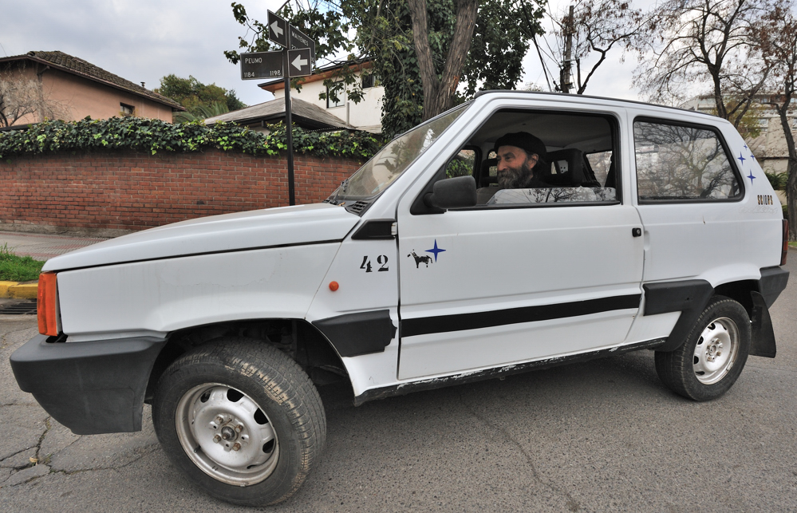

<html><head>

<!-- base href="http://www.sc.eso.org/~ohainaut/tmp/car42.html" -->

   <meta http-equiv="Content-Type" content="text/html; charset=iso-8859-1">
   <meta name="GENERATOR" content="Mozilla/4.05 [en] (X11; I; HP-UX B.10.01 9000/770) [Netscape]"></head><body alink="#ff0000" bgcolor="#ffffff" link="#0000ee" text="#000000" vlink="#551a8b">
&nbsp;

<h1>
<b><font color="#330000">The Car 42 Saga</font></b></h1>
&nbsp;

<hr>
<p><i>
Car 42 is a 4WD Fiat Panda (yes, that exists), that lived most of its active life on La Silla.
In 1997, a tragic accident happened: the car disappeared. Did it run away? Was it a kidnapping? The entire Organization was shocked, stirred, moved. That was the first episode of what became one of the longest ESO-related saga.
</i>

<ul>
<li><a href="#ep1">1997 - Episode 1</a>
<li><a href="#ep2">1998-1999 - Episode 2, the sequel</a>
<li><a href="#jm2">2009 - In memoriam Jorge Miranda </a>
<li><a href="#ep3">2010 - The final episode: the Departure of Car 42 </a>
<li><a href="#ep4">2011 - Episode 4, the Return of Car 42</a>
</ul>


<a name="ep1"><h1>Car 42</h1>
<h2>Episode 1 - 1997</h2>


Below is a transcript of some of the emails exchanged during one of
the most tragic episodes of the NTT Team: the disapearance of Blanca's car.

</p><p>Blanca kindly sent me some precious documents that well educated users
sent directly to her (as opposed to all-users). As these are not public
domain, I removed the information about the author's identification...

</p><p>I also added some documents posterior to the main Saga.

</i>

</p><p>
</p><hr width="100%"><tt></tt>

<p><b><i>The original mail...</i></b>


</p><p><tt>Message 51:</tt>
<br><tt>From bcamucet@eso.org Fri Oct 17 14:43:20 1997</tt>
<br><tt>Date: Fri, 17 Oct 1997 17:37:49 +0000</tt>
<br><tt>From: Blanca Luz Camucet&nbsp;<bcamucet@eso.org></bcamucet@eso.org></tt>
<br><tt>Mime-Version: 1.0</tt>
<br><tt>To: all-users@eso.org</tt>
<br><tt>Subject: Auto 42</tt>
<br><tt>Content-Transfer-Encoding: 7bit</tt>

</p><p><b><tt>Colegas:</tt></b>
<br><b><tt>Alguien tomo el auto 42 sin avisar. Lo hemos buscado por todas</tt></b>
<br><b><tt>partes, y aun no lo encontramos, si alguien ha visto el auto,
por favor</tt></b>
<br><b><tt>avise al 4162, 4164.</tt></b>
<br><b><tt>Gracias</tt></b>
<br><b><tt>Blanca Luz Camucet</tt></b>
<br>&nbsp;

</p><p><i>[note the To: all-users@eso.org...]</i>

</p><p>
</p><hr width="100%">
<br><tt>Subject: Re: Auto 42</tt>
<br><tt>&nbsp;Date: Fri, 17 Oct 1997 20:03:22 +0200</tt>
<br><tt>&nbsp;From: xx</tt>
<br><tt>&nbsp;To: Blanca Luz Camucet &lt;bcamucet@eso.org&gt;</tt>
<br><tt>&nbsp;References: 1</tt>
<br><tt></tt>&nbsp;<b><tt></tt></b>

<p><b><tt>I've seen it outside just now.</tt></b>
<br><b><tt>Should I send it Fedex ?</tt></b>
<br><b><tt>Tchao</tt></b>
<br><b><tt>FXXX</tt></b><b><tt></tt></b>

</p><p>Blanca: <i>Y mi respuesta fue, y ademas fue la unica persona que le
alcance a</i>
<br><i>responder ese dia:</i>
<br><i><tt></tt></i>&nbsp;<i><tt></tt></i>

</p><p><tt>Subject:&nbsp; Merci</tt>
<br><tt>Date: Fri, 17 Oct 1997 18:20:53 +0000</tt>
<br><tt>From:&nbsp; Blanca Luz Camucet &lt;bcamucet@eso.org&gt;</tt>
<br><tt>Organization:&nbsp; ESO - European Southern Observatory</tt>
<br><tt>To:</tt>
<br><tt>BCC:&nbsp; bcamucet@eso.org</tt><b><tt></tt></b>

</p><p><b><tt>Fxxx:</tt></b>
<br><b><tt>&nbsp;&nbsp;&nbsp;&nbsp;&nbsp;&nbsp;&nbsp;&nbsp; Mmm, ce n'est
pas possible, je ne crois qui l'auto voyage</tt></b>
<br><b><tt>beaucoup, mais l'effort per cherchez est grand. Merci beaucoup.</tt></b>
<br><b><tt>&nbsp;&nbsp;&nbsp;&nbsp;&nbsp;&nbsp;&nbsp;&nbsp; Blanca Luz</tt></b>
<br>
</p><hr width="100%">
<br><tt>Subject: Re: Auto 42</tt>
<br><tt>Date: Mon, 20 Oct 1997 08:35:14 +0200 (MET DST)</tt>
<br><tt>From: Hxxx</tt>
<br><tt>To: bcamucet@eso.org</tt><b><tt></tt></b>

<p><b><tt>It is not in Garching ....</tt></b>
<br><b><tt>Uxxx</tt></b>
<br><b><tt></tt></b>&nbsp;<b><tt></tt></b>

</p><p>
</p><hr width="100%">
<br><tt><b>S</b>ubject: Re: Auto 42</tt>
<br><tt>Date: Sat, 18 Oct 1997 16:27:43 -0300</tt>
<br><tt>From: Jxxx</tt>
<br><tt>To: Blanca Luz Camucet &lt;bcamucet@eso.org&gt;</tt>
<br><tt>References: 1</tt>
<br><tt></tt>&nbsp;<b><tt></tt></b>

<p><b><tt>Yo NOOOO !!!!</tt></b>
<br><b><tt>--</tt></b>
<br><b><tt>______________________________________________________________</tt></b>
<br><b><tt>EUROPEAN&nbsp; SOUTHERN&nbsp; OBSERVATORY&nbsp;&nbsp; -&nbsp;
E.S.O. - LA SILLA-CHILE</tt></b>
<br><b><tt>xxx</tt></b>
<br><b><tt></tt></b>&nbsp;<b><tt></tt></b>

</p><p>
</p><hr width="100%">
<br><tt>Message 52:</tt>
<br><tt>From jibsen@eso.org Fri Oct 17 15:00:08 1997</tt>
<br><tt>Date: Fri, 17 Oct 1997 14:55:26 -0400</tt>
<br><tt>From: Jorge Patricio Andres Ibsen Fuentes&nbsp;<jibsen@eso.org></jibsen@eso.org></tt>
<br><tt>Mime-Version: 1.0</tt>
<br><tt>To: Blanca Luz Camucet&nbsp;<bcamucet@eso.org></bcamucet@eso.org></tt>
<br><tt>Cc: all-users@eso.org</tt>
<br><tt>Subject: Re: Auto 42</tt>
<br><tt>Content-Transfer-Encoding: 7bit</tt>

<p><b><tt>Blanca Luz Camucet wrote:</tt></b>
<br><b><tt>&gt;</tt></b>
<br><b><tt>&gt; Colegas:</tt></b>
<br><b><tt>&gt; Alguien tomo el auto 42 sin avisar. Lo hemos buscado por todas</tt></b>
<br><b><tt>&gt; partes, y aun no lo encontramos, si alguien ha visto el auto,
por favor</tt></b>
<br><b><tt>&gt; avise al 4162, 4164.</tt></b>
<br><b><tt>&gt; Gracias</tt></b>
<br><b><tt>&gt; Blanca Luz Camucet</tt></b>

</p><p><b><tt>Pero si yo no tengo licencia puh!</tt></b>
<br>&nbsp;

</p><p><b><tt>Jorge Ibsen</tt></b>
<br><b><tt>jibsen@only.god.knows.where</tt></b>

</p><p>
</p><hr width="100%">

<p><tt>Message 53:</tt>
<br><tt>From ematamor@eso.org Fri Oct 17 17:40:27 1997</tt>
<br><tt>To: bcamucet@eso.or</tt>
<br><tt>Cc: all-users@eso.org</tt>
<br><tt>Subject: Auto perdido ?</tt>
<br><tt>Mime-Version: 1.0</tt>
<br><tt>Date: Fri, 17 Oct 1997 17:35:15 -0400</tt>
<br><tt>From: Eduardo Matamoros&nbsp;<ematamor@eso.org></ematamor@eso.org></tt>

</p><p><b><tt>Blanca Luz Camucet wrote:</tt></b>
<br><b><tt>&gt;</tt></b>
<br><b><tt>&gt; Colegas:</tt></b>
<br><b><tt>&gt; Alguien tomo el auto 42 sin avisar. Lo hemos buscado por todas</tt></b>
<br><b><tt>&gt; partes, y aun no lo encontramos, si alguien ha visto el auto,
por favor</tt></b>
<br><b><tt>&gt; avise al 4162, 4164.</tt></b>
<br><b><tt>&gt; Gracias</tt></b>
<br><b><tt>&gt; Blanca Luz Camucet</tt></b>
<br>&nbsp;

</p><p><b><tt>Blanca, debes llamar a porteria pelicano para que revisen bien
los</tt></b>
<br><b><tt>equipajes del personal que esta bajando en el bus.</tt></b>

</p><p><b><tt>En el Team 3.60Cat, no lo hemos visto.</tt></b>

</p><p><b><tt>Saludos</tt></b>

</p><p><b><tt>Eduardo</tt></b>

</p><p>
</p><hr width="100%">

<p><tt>Message 55:</tt>
<br><tt>From ralbrech@eso.org Mon Oct 20 04:09:19 1997</tt>
<br><tt>To: Blanca Luz Camucet&nbsp;<bcamucet@eso.org></bcamucet@eso.org></tt>
<br><tt>cc: ralbrech@eso.org, all-users@eso.org</tt>
<br><tt>Subject: Re: Auto 42</tt>
<br><tt>Mime-Version: 1.0</tt>
<br><tt>Date: Mon, 20 Oct 1997 09:02:44 +0200</tt>
<br><tt>From: Rudi Albrecht&nbsp;<ralbrech@eso.org></ralbrech@eso.org></tt>

</p><p><b><tt>Tampoco esta' aqui en Garching.</tt></b>

</p><p><b><tt>Saludos</tt></b>

</p><p><b><tt>Rudi Albrecht</tt></b>

</p><p><b><tt>--</tt></b>
<br><b><tt>+---------------------------------------------------------------------</tt></b>
<br><b><tt>Rudi Albrecht ralbrech@eso.org</tt></b>
<br><b><tt>Space Telescope - European Coordinating Facility</tt></b>
<br><b><tt>European Southern Observatory Room 419</tt></b>
<br><b><tt>Karl-Schwarzschild-Str. 2, D-85748 Garching bei Muenchen, Germany</tt></b>
<br><b><tt>Tel:+49 89 320 06 287 Fax:+49 89 320 06 480</tt></b>
<br><tt><b>+---------------------------</b>------------------------------------------</tt>
<br>
</p><hr width="100%">
<br><tt>Subject: Re: Auto 42</tt>
<br><tt>&nbsp;Date:&nbsp; Mon, 20 Oct 1997 10:32:45 +0100</tt>
<br><tt>&nbsp;From:&nbsp; Rxxx</tt>
<br><tt>&nbsp;Organization: European Southern Observatory</tt>
<br><tt>&nbsp;To: Blanca Luz Camucet &lt;bcamucet@eso.org&gt;</tt>
<br><tt>&nbsp;References: 1</tt><b><tt></tt></b>

<p><b><tt>Hola Blanca,</tt></b><b><tt></tt></b>

</p><p><b><tt>Si lo veo por Garching (en Alemania) les digo que se lo devuelvan.</tt></b><b><tt></tt></b>

</p><p><b><tt>Rxxx</tt></b><b><tt></tt></b>

</p><p><b><tt>_________________________________________________________________</tt></b><b><tt></tt></b>

</p><p><b><tt>Rxxx</tt></b><b><tt></tt></b>

</p><p><b><tt>&nbsp;&nbsp;&nbsp;&nbsp;&nbsp;&nbsp;&nbsp; ____/&nbsp; ____/&nbsp;
__&nbsp; /&nbsp;&nbsp;&nbsp; Karl-Schwarzschild-Strasse 2</tt></b>
<br><b><tt>&nbsp;&nbsp;&nbsp;&nbsp;&nbsp;&nbsp; /&nbsp;&nbsp;&nbsp;&nbsp;&nbsp;
/&nbsp;&nbsp;&nbsp;&nbsp;&nbsp; /&nbsp;&nbsp; /&nbsp;&nbsp;&nbsp;&nbsp;
D-85748 Garching bei Muenchen</tt></b>
<br><b><tt>&nbsp;&nbsp;&nbsp;&nbsp;&nbsp; /___/&nbsp; ___ /&nbsp; /&nbsp;&nbsp;
/&nbsp;&nbsp;&nbsp;&nbsp;&nbsp; Phone: +49-89-3200-6594</tt></b>
<br><b><tt>&nbsp;&nbsp;&nbsp;&nbsp; /&nbsp;&nbsp;&nbsp;&nbsp;&nbsp;&nbsp;&nbsp;&nbsp;&nbsp;
/&nbsp; /&nbsp;&nbsp; /&nbsp;&nbsp;&nbsp;&nbsp;&nbsp;&nbsp; Fax&nbsp; :
+49 89-3202-362</tt></b>
<br><b><tt>&nbsp;&nbsp;&nbsp; ____/&nbsp; ____/ _____/&nbsp;&nbsp;&nbsp;&nbsp;&nbsp;&nbsp;&nbsp;
Email: rxx</tt></b>
<br><b><tt>________________________________________________________________</tt></b>
<br>
</p>


<hr width="100%">
<br><tt>From: Lxxx</tt>
<br><tt>To: bcamucet@eso.org (Blanca Luz Camucet)</tt><b><tt></tt></b>

<p><b><tt>Querida Blanca, permiteme sumarme a tu pesar por la perdida del
auto 42.</tt></b><b><tt></tt></b>

</p><p><b><tt>En el futuro la silla usara mis maquinas ecologicas ,asi todo
el mundo</tt></b>
<br><b><tt>tendra asegurado su transporte .</tt></b>
<br><b><tt>Infinitamente condolido</tt></b>
<br><b><tt>Lxxx</tt></b><tt></tt>

</p><p>
</p><hr width="100%">
<br><tt>Subject: RE: Auto 42</tt>
<br><tt>Date: Tue, 21 Oct 97 15:06:05 utc</tt>
<br><tt>From: mxxx</tt>
<br><tt>To: Carlos Ebensperger &lt;cebenspe@eso.org&gt;, bcamucet@eso.org</tt><b><tt></tt></b>

<p><b><tt>Por lo demas, eso habria sido bien dificil, porque no existe
tal avenida</tt></b><b><tt></tt></b>

</p><p><b><tt>en La Serena!&nbsp; Lo unico parecido se llama Avenida del Mar!</tt></b><b><tt></tt></b>

</p><p><b><tt>Puchas que te agarraron pa'l chuleteo con el asunto del auto,
Blanca!</tt></b><b><tt></tt></b>

</p><p><b><tt>Chao,</tt></b>
<br><b><tt>&nbsp;&nbsp;&nbsp;&nbsp;&nbsp;&nbsp;&nbsp;&nbsp;&nbsp;&nbsp;&nbsp;&nbsp;&nbsp;&nbsp;&nbsp;
Mxx</tt></b><b><tt></tt></b>


<p><tt>Message 59:</tt>
<br><tt>From mpilleux@eso.org Tue Oct 21 11:41:03 1997</tt>
<br><tt>Date: Tue, 21 Oct 1997 11:37:09 -0400</tt>
<br><tt>From: Mauricio Pilleux&nbsp;<mpilleux@eso.org></mpilleux@eso.org></tt>
<br><tt>MIME-Version: 1.0</tt>
<br><tt>To: "'Blanca Luz Camucet'"&nbsp;<bcamucet@eso.org></bcamucet@eso.org></tt>
<br><tt>CC: "'all-users@eso.org'"&nbsp;<all-users@eso.org></all-users@eso.org></tt>
<br><tt>Subject: Re: Auto 42</tt>
<br><tt>Content-Transfer-Encoding: 7bit</tt>

</p><p><b><tt>TENGO MUCHA CURIOSIDAD POR SABER SI APARECIO EL FAMOSO AUTO (?).</tt></b>

</p><p><b><tt>Saludos,</tt></b>

</p><p><b><tt>Mauricio Pilleux</tt></b>
<br>
</p><hr width="100%">
<br><tt>Message 60:</tt>
<br><tt>From jstegmei@eso.org Tue Oct 21 12:10:15 1997</tt>
<br><tt>To: mpilleux@eso.org</tt>
<br><tt>cc: "'Blanca Luz Camucet'"&nbsp;<bcamucet@eso.org>,</bcamucet@eso.org></tt>
<br><tt>"'all-users@eso.org'"&nbsp;<all-users@eso.org></all-users@eso.org></tt>
<br><tt>Subject: Re: Auto 42</tt>
<br><tt>Date: Tue, 21 Oct 1997 17:06:04 +0200</tt>
<br><tt>From: Joerg Stegmeier&nbsp;<jstegmei@eso.org></jstegmei@eso.org></tt>
<br>&nbsp;
<br>&nbsp;

<p><b><tt>Could you please stop sending this spanish email-conversation</tt></b>
<br><b><tt>to all-users.</tt></b>

</p><p><b><tt>THANKS,</tt></b>

</p><p><b><tt>Joerg</tt></b>
<br>
</p><hr width="100%">

<i> The following message was sent to all-users by Axxxxxe Cxxxxxxc, administrator of La Silla.  This happened many, many years ago, so I blanked her name, as it made this page appear on any Google search on her name. As these times were troubled, with some lingering tensions between the ESO management and the union, this message gave a completely new twist to the whole Car 42 saga.</i>

<p><tt>Message 61:</tt>
<br><tt>From axxxxxx@eso.org Tue Oct 21 13:17:49 1997</tt>
<br><tt>X-Sender: axxxxxx@web3.hq.eso.org</tt>
<br><tt>Mime-Version: 1.0</tt>
<br><tt>Date: Tue, 21 Oct 1997 18:14:31 +0200</tt>
<br><tt>To: mpilleux@eso.org, Eduardo Matamoros&nbsp;<ematamor@eso.org>,</ematamor@eso.org></tt>
<br><tt>Carlos Ebensperger&nbsp;<cebenspe@eso.org>,&nbsp;<jibsen@eso.org></jibsen@eso.org></cebenspe@eso.org></tt>
<br><tt>From: Axxxxxe Cxxxxxxc&nbsp;<axxxxx@eso.org></tt>
<br><tt>Subject: Re: Auto 42</tt>
<br><tt>Cc: "'Blanca Luz Camucet'"&nbsp;<bcamucet@eso.org>,</bcamucet@eso.org></tt>
<br><tt>"'all-users@eso.org'"&nbsp;<all-users@eso.org></all-users@eso.org></tt>

</p><p><b><tt>and I sure hope somebody among you does care about lost equipment</tt></b>

</p><p><b><tt>Axxxxxe Cxxxxxxc</tt></b>
<br>&nbsp;

</p><p><b><tt>E.S.O.</tt></b>
<br><b><tt>Tel: +49-89-32006-xxx</tt></b>
<br><b><tt>Fax: +49-89-32006-xxx</tt></b>

</p><p>
</p><hr width="100%">
<br><tt>Message 62:</tt>
<br><tt>From ralbrech@eso.org Tue Oct 21 13:21:32 1997</tt>
<br><tt>To: Joerg Stegmeier&nbsp;<jstegmei@eso.org></jstegmei@eso.org></tt>
<br><tt>cc: mpilleux@eso.org, "'Blanca Luz Camucet'"&nbsp;<bcamucet@eso.org>,</bcamucet@eso.org></tt>
<br><tt>"'all-users@eso.org'"&nbsp;<all-users@eso.org>, ralbrech@eso.org</all-users@eso.org></tt>
<br><tt>Subject: Re: Auto 42</tt>
<br><tt>Mime-Version: 1.0</tt>
<br><tt>Date: Tue, 21 Oct 1997 18:16:50 +0200</tt>
<br><tt>From: Rudi Albrecht&nbsp;<ralbrech@eso.org></ralbrech@eso.org></tt>

<p><b><tt>Could you please stop these English language comments to all-users.</tt></b>

</p><p><b><tt>In case you have not noticed: the native language of more than
half of the ESO</tt></b>
<br><b><tt>employees is Spanish.</tt></b>

</p><p><b><tt>DANKE,</tt></b>

</p><p><b><tt>Rudi</tt></b>
<br><b><tt>--</tt></b>
<br><b><tt>+---------------------------------------------------------------------</tt></b>
<br><b><tt>Rudi Albrecht ralbrech@eso.org</tt></b>
<br><b><tt>Space Telescope - European Coordinating Facility</tt></b>
<br><b><tt>European Southern Observatory Room 419</tt></b>
<br><b><tt>Karl-Schwarzschild-Str. 2, D-85748 Garching bei Muenchen, Germany</tt></b>
<br><b><tt>Tel:+49 89 320 06 287 Fax:+49 89 320 06 480</tt></b>
<br><b><tt>+---------------------------------------------------------------------</tt></b>
<br>&nbsp;

</p><p>
</p><hr width="100%">
<br><tt>Message 63:</tt>
<br><tt>From nttt@eso.org Wed Oct 22 09:08:37 1997</tt>
<br><tt>Date: Wed, 22 Oct 1997 09:04:20 -0300</tt>
<br><tt>From: NTT team coordinator&nbsp;<nttt@eso.org></nttt@eso.org></tt>
<br><tt>Mime-Version: 1.0</tt>
<br><tt>To: all-users@eso.org</tt>
<br><tt>Subject: car 42</tt>
<br><tt>Content-Transfer-Encoding: 7bit</tt>

<p><b><tt>Dear all,</tt></b>

</p><p><b><tt>Please be informed that car 42 is again at home. He seems to
be physical</tt></b>
<br><b><tt>and psychologically ok, apparently he didn't suffer any abuse,
nor even</tt></b>
<br><b><tt>any kidnapping.</tt></b>

</p><p><b><tt>We want to thank everybody who help us to find 42, also to all
the</tt></b>
<br><b><tt>people who proved that humor hasn't dead at ESO.</tt></b>
<br>&nbsp;

</p><p><b><tt>To all of you, many thanks and Muchos Saludos</tt></b>

</p><p><b><tt>R Parra</tt></b>
<br><b><tt>NTT Team</tt></b>
<br>&nbsp;

</p><p>
</p><hr width="100%">

<p><tt>Message 65:</tt>
<br><tt>From gdelgado@eso.org Thu Oct 23 00:26:17 1997</tt>
<br><tt>Date: Thu, 23 Oct 1997 00:01:07 -0400</tt>
<br><tt>From: Guillermo Delgado&nbsp;<gdelgado@eso.org></gdelgado@eso.org></tt>
<br><tt>Mime-Version: 1.0</tt>
<br><tt>To: Axxxxxe Cxxxxxxc&nbsp;<axxxxxx@eso.org></axxxxxx@eso.org></tt>
<br><tt>Cc: mpilleux@eso.org, Eduardo Matamoros&nbsp;<ematamor@eso.org>,</ematamor@eso.org></tt>
<br><tt>Carlos Ebensperger&nbsp;<cebenspe@eso.org>, jibsen@eso.org,</cebenspe@eso.org></tt>
<br><tt>"'Blanca Luz Camucet'"&nbsp;<bcamucet@eso.org>,</bcamucet@eso.org></tt>
<br><tt>"'all-users@eso.org'"&nbsp;<all-users@eso.org></all-users@eso.org></tt>
<br><tt>Subject: Re: Auto 42 o la inconciencia de algunos...</tt>
<br><tt>X-Priority: 3 (Normal)</tt>

</p><p><b><tt>Axxxxxe Cxxxxxxc wrote:</tt></b>

</p><p><b><tt>&gt; and I sure hope somebody among you does care about lost equipment</tt></b>
<br><b><tt>&gt;</tt></b>
<br><b><tt>&gt; Axxxxxe Cxxxxxxc</tt></b>
<br><b><tt>&gt;</tt></b>
<br><b><tt>&gt; E.S.O.</tt></b>
<br><b><tt>&gt; Tel: +49-89-32006-486</tt></b>
<br><b><tt>&gt; Fax: +49-89-32006-366</tt></b>
<br>&nbsp;

</p><p><b><tt>Nuevamente la sapiencia y altura de miras de algunos de nuestros</tt></b>
<br><b><tt>ilustres dignatarios nos trae de regreso al mundo real. Mundo
en el</tt></b>
<br><b><tt>que no se deben tolerar actitudes inmaduras como el buen humor.</tt></b>

</p><p><b><tt>Mas bien debemos concentrarnos en la busqueda de objetos perdidos
que</tt></b>
<br><b><tt>tanta merma estan produciendo en el buen resultado de las operaciones</tt></b>
<br><b><tt>de La Silla. Por ejemplo, me gustar&igrave;a que el culpable de los
desacatos</tt></b>
<br><b><tt>en La Silla responda por sus cr&igrave;menes y conteste, al menos,
las</tt></b>
<br><b><tt>siguientes preguntas:</tt></b>

</p><p><b><tt>- El robo de la hora de onces, que tanto ayudaba a la buena</tt></b>
<br><b><tt>convivencia entre las distintas secciones del Observatorio.</tt></b>
<br><b><tt>- La desaparicion de la confianza del personal con sus superiores</tt></b>
<br><b><tt>jerarquicos, y por ende a la Organizaci=F3n.</tt></b>
<br><b><tt>- La desaparicion del espiritu de equipo.</tt></b>
<br><b><tt>- Quien se llevo la risa del comedor?</tt></b>
<br><b><tt>- donde exiliaron a los patos del Be&ntilde;o?</tt></b>
<br><b><tt>- Cuando nos cambiaron la ciencia por la economia de
mercado?</tt></b>
<br><b><tt>- Quien definio que una persona que ha entregado 9 o
mas anos de su vida <br>a La Silla vale menos que un espejo de 8 mt?</tt></b>

</p><p><b><tt>En realidad tengo muchas otras preguntas, pero no tengo ganas
de</tt></b>
<br><b><tt>escribir m=E1s. Entre otras razones porque son ya las doce de
la noche y</tt></b>
<br><b><tt>mi familia tampoco me paga horas extras por estar frente al
computador</tt></b>
<br><b><tt>a esta hora.</tt></b>

</p><p><b><tt>Saludos a todos los delincuentes que se atreven a sonreir a pesar
de</tt></b>
<br><b><tt>las circunstancias.</tt></b>

</p><p><b><tt>Guillermo</tt></b>

</p><p><b><tt>PD: Por mas que he mirado por todos lados aqui en Santiago,
no he</tt></b>
<br><b><tt>podido ver un auto blanco con un numerito 42 en su costado.
Aunque hay</tt></b>
<br><b><tt>rumores cada vez mas insistentes que hablan de que habrian
visto a un</tt></b>
<br><b><tt>ciudadano aleman de apellido Scheaffer manejando un auto de
esas</tt></b>
<br><b><tt>caracteristicas...</tt></b>
<br>
</p><hr width="100%">
<br>&nbsp;

<p><tt>From gtimmerm@eso.org Thu Oct 23 09:30:15 1997</tt>
<br><tt>Date: Thu, 23 Oct 1997 09:14:36 -0300</tt>
<br><tt>From: Gero Timmermann&nbsp;<gtimmerm@eso.org></gtimmerm@eso.org></tt>
<br><tt>Mime-Version: 1.0</tt>
<br><tt>To: Guillermo Delgado&nbsp;<gdelgado@eso.org></gdelgado@eso.org></tt>
<br><tt>Cc: all-users@eso.org</tt>
<br><tt>Subject: Re: Auto 42 o la inconciencia de algunos...</tt>
<br><tt>Content-Transfer-Encoding: quoted-printable</tt>
<br><tt>X-MIME-Autoconverted: from 8bit to quoted-printable by web3.hq.eso.org
id OAA16903</tt>

</p><p><b><tt>Hola Guillermo !</tt></b>

</p><p><b><tt>Felicitaciones !!</tt></b>

</p><p><b><tt>But, so the NON-spanish-native speaking comunity (mayority? :-)
at ESO</tt></b>
<br><b><tt>doesn't miss a word, I rather say it in our sacred "official
language"</tt></b>
<br><b><tt>...</tt></b>
<br><b><tt>Congratulations, Willy !!</tt></b>

</p><p><b><tt>You were darn close in your PostData: at least regarding the
name of</tt></b>
<br><b><tt>the car-less subject, whose name shall not remain in anonymity:</tt></b>
<br><b><tt>The winner is:...... Heinrich Schmidt !!!</tt></b>
<br><b><tt>In the deep darkness of La Silla nights, this irresponsible
soul light-heartedly</tt></b>
<br><b><tt>stepped into car #42, without the slightest precaution in making
sure this</tt></b>
<br><b><tt>car really belonged to him !!! (shame on you !! see what you
started ? :-(</tt></b>
<br><b><tt>Thou shalst repeat 42 times: "I will never ever take what belongs
to </tt> ESO,</tt></b>
<br><b><tt>or is not mine (again)"</tt></b>

</p><p><b><tt>Gero</tt></b>

</p><p><b><tt>PD:</tt></b>
<br><b><tt>In spanish we say: "por la boca muere el pez",</tt></b>
<br><b><tt>which translates to something like</tt></b>
<br><b><tt>"the fish gets hooked by his mouth"..............</tt></b>

</p><p><b><tt>*--------1---------2---------3---------4---------5---------6-----</tt></b>
<br><b><tt>* Gero Timmermann gtimmerm@eso.org home: (56-2) 273-4348</tt></b>
<br><b><tt>* http://www.eso.org/~gtimmerm CUSeeMe: 134.171.81.90</tt></b>
<br><b><tt>* European Southern Observatory, ESO LaSilla, Mangmt,Tech.Supp.</tt></b>
<br><b><tt>* POBox 19001, Santiago-19, CHILE - Phone: (56-2) 207-3397 x4456</tt></b>
<br><b><tt>*********1*********2*********3*********4*********5*********6</tt></b>
<br>
</p><hr width="100%">
<br><tt>Subject:</tt>
<br><tt>Re: Auto 42 o la inconciencia de algunos...</tt>
<br><tt>Date: Fri, 24 Oct 1997 08:54:49 +0200</tt>
<br><tt>From: Rxxx@eso.org&gt;</tt>
<br><tt>To:</tt>
<br><tt>Guillermo Delgado &lt;gdelgado@eso.org&gt;</tt>
<br><tt>CC: Axxxxxe Cxxxxxxc &lt;axxxxxx@eso.org&gt;, mpilleux@eso.org, Eduardo</tt>
<br><tt>Matamoros &lt;ematamor@eso.org&gt;, Carlos Ebensperger &lt;cebenspe@eso.org&gt;,</tt>
<br><tt>jibsen@eso.org, Blanca Luz Camucet&lt;bcamucet@eso.org&gt;, Gero</tt>
<br><tt>Timmermann&lt;gtimmerm@eso.org&gt;, ralbrech@eso.org</tt><b><tt></tt></b>

<p><b><tt>Ola' Guillermo,</tt></b><b><tt></tt></b>

</p><p><b><tt>I am sending this to you and the small number of people who you</tt></b>
<br><b><tt>explicitly addressed. Here in Garching there were complaints
that the "Auto 42"</tt></b>
<br><b><tt>issue should not have been addressed to "all-users", so I want
to avoid more</tt></b>
<br><b><tt>complaints of this kind. However, I was alarmed by the apparent</tt></b>
<br><b><tt>bitterness of your e-mail, so I decided to respond.</tt></b><b><tt></tt></b>

</p><p><b><tt>I also have to apologize for answering in English. My Spanish
is good</tt></b>
<br><b><tt>enough for everyday conversations, but not good enough for this
discussion.</tt></b><b><tt></tt></b>

</p><p><b><tt>&gt; Mundo en el</tt></b>
<br><b><tt>&gt; que no se deben tolerar actitudes inmaduras como el buen humor</tt></b><b><tt></tt></b>

</p><p><b><tt>Good humor in ESO is not dead. The "auto 42" issue is proof of
that. Of</tt></b>
<br><b><tt>course not everybody in ESO has the same, or even any, sense
of humor..</tt></b><b><tt></tt></b>

</p><p><b><tt>&gt; - La desapariciM-sn de la confianza del personal con sus superiores</tt></b>
<br><b><tt>&gt; - La desapariciM-sn del espM-mritu de equipo</tt></b><b><tt></tt></b>

</p><p><b><tt>These are serious issues. Good humor can help in solving them,
but it is</tt></b>
<br><b><tt>not sufficient.</tt></b><b><tt></tt></b>

</p><p><b><tt>The common denominator of both these issues is poor information
flow. If</tt></b>
<br><b><tt>you are being told "don't think, just do it" or, worse, if you
are being</tt></b>
<br><b><tt>told to do something which, according to the information you
have, does not make</tt></b>
<br><b><tt>sense, it leads to the effects you observed.</tt></b><b><tt></tt></b>

</p><p><b><tt>History is full of examples of successful heroic deeds of small
groups</tt></b>
<br><b><tt>against overwhelming forces. The Spartans at the Thermophyles,
the Mapoche</tt></b>
<br><b><tt>indians against the Spanish, the people of Leningrad against
the Germans. The</tt></b>
<br><b><tt>one element they had in common was that they knew what was at
stake and that</tt></b>
<br><b><tt>the goal of the "organisation" had become their personal goal.</tt></b><b><tt></tt></b>

</p><p><b><tt>This is where there seems to be a serious deficiency at ESO:
somehow the</tt></b>
<br><b><tt>organisation does not succeed in allowing the employees to identify
with</tt></b>
<br><b><tt>the common goal. It cannot be because of the goal itself: after
all, we are</tt></b>
<br><b><tt>building the largest telescope in the world; we are running
one of the</tt></b>
<br><b><tt>largest observatories of the world; we are building the most
sophisticated</tt></b>
<br><b><tt>instruments; we are involved in the operation of the Hubble
Space Telescope and we</tt></b>
<br><b><tt>are beginning to plan the Next Generation Space Telescope. We
are producing</tt></b>
<br><b><tt>exciting science. If these are not worthwhile goals it is hard
to</tt></b>
<br><b><tt>imagine what else there could be.</tt></b><b><tt></tt></b>

</p><p><b><tt>So why is it that a large number of people in ESO&nbsp; are not
able to</tt></b>
<br><b><tt>identify with those goals. Here are some possible reasons:</tt></b><b><tt></tt></b>

</p><p><b><tt>- The size of the project. ESO has been extremely ambitious to
take on a</tt></b>
<br><b><tt>project the size of the VLT. This would have been impossible
in</tt></b>
<br><b><tt>industry. Trying to do the impossible does, of course, create
difficult</tt></b>
<br><b><tt>situations.</tt></b><b><tt></tt></b>

</p><p><b><tt>- Cost constraints. All large projects, everywhere, have budget</tt></b>
<br><b><tt>problems. Compared to other "big science" projects the VLT is
doing very well.</tt></b>
<br><b><tt>However, because of the magnitude of the project, there is a
strain on</tt></b>
<br><b><tt>resources.</tt></b><b><tt></tt></b>

</p><p><b><tt>- Economic situation. It is no secret that the economic situation
is</tt></b>
<br><b><tt>Europe (and the rest of the world, for that matter) has been
getting difficult</tt></b>
<br><b><tt>in recent years. The result is that organisations like CERN,
ESA, NASA, and</tt></b>
<br><b><tt>ESO have been subject to repeated attempts to cut their budget.
Compared to</tt></b>
<br><b><tt>other organisations ESO has been very successful in fighting
for money, but we</tt></b>
<br><b><tt>had to take some cuts nonetheless. The result is that all organisations,
not</tt></b>
<br><b><tt>just ESO, had to cut staff, had to re-organize, had to outsource.
Of course</tt></b>
<br><b><tt>this is hard for those individuals who were affected by these
measures. On the</tt></b>
<br><b><tt>other hand, there are 4.5 million (!) unemployed workers in
Germany.</tt></b><b><tt></tt></b>

</p><p><b><tt>These are the "outside" reasons. There are others:</tt></b><b><tt></tt></b>

</p><p><b><tt>- Communication problems. Even though we have satellite antennas,
e-mail</tt></b>
<br><b><tt>and video conferencing there is a deplorable lack of both vertical
and</tt></b>
<br><b><tt>horizontal communication. I can imagine that the turno system
on La Silla</tt></b>
<br><b><tt>contributes to the communication problems.</tt></b><b><tt></tt></b>

</p><p><b><tt>- Rapid growth/rapid turnover. ESO used to be a rather small</tt></b>
<br><b><tt>organization where everybody knew everypody else. We are now
a company with lots of</tt></b>
<br><b><tt>employees coming and going.</tt></b><b><tt></tt></b>

</p><p><b><tt>- Shifting of priorities. La Silla used to be the center of ESO.
It has</tt></b>
<br><b><tt>now shifted to VLT, and resources are being diverted from La
Silla.</tt></b><b><tt></tt></b>

</p><p><b><tt>- Work load. There is just plain and simple a lot of work to
be done.</tt></b>
<br><b><tt>This means that some actions, which should have been prepared
and</tt></b>
<br><b><tt>communicated to the staff well ahead of time are implemented
abruptly, with inadequate</tt></b>
<br><b><tt>information and explanation.</tt></b><b><tt></tt></b>

</p><p><b><tt>So where could we start to improve this situation? Let's examine
the</tt></b>
<br><b><tt>situation in two ways:</tt></b><b><tt></tt></b>

</p><p><b><tt>- From the "top". I think it is fair to say that at the top level
the</tt></b>
<br><b><tt>organization is well set up to do the project: the organization,
the</tt></b>
<br><b><tt>machanisms, the procedures, etc., have been put in place. The
fact that</tt></b>
<br><b><tt>ESO lost very little financial support in the recent budget
cutbacks is very</tt></b>
<br><b><tt>much due to this fact: we were able to demonstrate, to Council,
and through</tt></b>
<br><b><tt>Council to the governments of the member states, that we know
what we are doing,</tt></b>
<br><b><tt>that we are spending the money carefully, that we are on top
of the project.</tt></b><b><tt></tt></b>

</p><p><b><tt>- From the "bottom". There is no doubt that the ESO employees
are</tt></b>
<br><b><tt>competent, and that they are able to perform well in their jobs.
I think the ESO</tt></b>
<br><b><tt>workforce is way above average when it comes to dedication and</tt></b>
<br><b><tt>resourcefulness.</tt></b><b><tt></tt></b>

</p><p><b><tt>So why then is it that there are problems? It can only be that
whatever</tt></b>
<br><b><tt>happens at the "top" is not being properly conveyed to the "bottom".</tt></b><b><tt></tt></b>

</p><p><b><tt>This means that we "mid-level" people (I am one of them) are
not</tt></b>
<br><b><tt>successful in closing the loop between "top" and "bottom", between
design and</tt></b>
<br><b><tt>implementation, between the General and the soldiers in the
trenches.</tt></b><b><tt></tt></b>

</p><p><b><tt>While it could be argued that the General should visit the trenches
more often it</tt></b>
<br><b><tt>is obvious that this is</tt></b>
<br><b><tt>neither possible nor feasible given the geographic distribution
of the</tt></b>
<br><b><tt>ESO installations.</tt></b><b><tt></tt></b>

</p><p><b><tt>It is the mid level people who have to take the decisions made
at the</tt></b>
<br><b><tt>top, understand why the decisions were taken, convey the necessity
to their</tt></b>
<br><b><tt>subordinates, and help them in implementing the decisions. The
most</tt></b>
<br><b><tt>important aspect is that the implementors must get the feeling
that what they do</tt></b>
<br><b><tt>and how they do it really makes a difference.</tt></b><b><tt></tt></b>

</p><p><b><tt>In defense of the mid level people I want to say that there is</tt></b>
<br><b><tt>considerable pressure on them, that quite often they themselves
are faced with</tt></b>
<br><b><tt>difficult situations. That sometimes it is too easy to say "Don't
ask, just do</tt></b>
<br><b><tt>it".</tt></b><b><tt></tt></b>

</p><p><b><tt>Which brings us to the "philosophical" issue:</tt></b><b><tt></tt></b>

</p><p><b><tt>> Quien definio que una persona que
ha entregado 9 o mas anos de</tt></b>
<br><b><tt>> su vida a La Silla vale menos que un espejo de 8 mt?</tt></b><b><tt></tt></b>

</p><p><b><tt>Nobody will claim that a person is worth less than an 8-meter
mirror. However,</tt></b>
<br><b><tt>the fact of the matter is that ESO is a service organisation,
whose</tt></b>
<br><b><tt>purpose is to build and maintain telescopes. If we fail to do
this we will all get</tt></b>
<br><b><tt>fired by Council. The challenge is to build telescopes AND to
do it in such a</tt></b>
<br><b><tt>way that people are happy.</tt></b><b><tt></tt></b>

</p><p><b><tt>Let me suggest the following: if you are faced with an ESO decision</tt></b>
<br><b><tt>which does not make any sense to you e-mail me and I'll try
to clear it up.</tt></b><b><tt></tt></b>

</p><p><b><tt>Saludos a todos los sobrevivientes,</tt></b><b><tt></tt></b>

</p><p><b><tt>Rxxx</tt></b>
<br><b><tt>--</tt></b>
<br><b><tt>+---------------------------------------------------------------------</tt></b>
<br><b><tt>Rxxx</tt></b>
<br><b><tt>European Southern
Observatory&nbsp;&nbsp;&nbsp;&nbsp;&nbsp;&nbsp;&nbsp;&nbsp;&nbsp;&nbsp;&nbsp;&nbsp;&nbsp;&nbsp;&nbsp;&nbsp;&nbsp;&nbsp;&nbsp;&nbsp;&nbsp;&nbsp;&nbsp;&nbsp;&nbsp;&nbsp;&nbsp;&nbsp;&nbsp;&nbsp;&nbsp;&nbsp;
Room</tt></b>
<br><b><tt>Karl-Schwarzschild-Str. 2,&nbsp;&nbsp; D-85748 Garching bei
Muenchen,&nbsp;&nbsp;&nbsp; Germany</tt></b>
<br><b><tt>Tel:+49 89 320 06
xxx&nbsp;&nbsp;&nbsp;&nbsp;&nbsp;&nbsp;&nbsp;&nbsp;&nbsp;&nbsp;&nbsp;&nbsp;&nbsp;&nbsp;&nbsp;&nbsp;&nbsp;&nbsp;&nbsp;&nbsp;&nbsp;&nbsp;&nbsp;&nbsp;&nbsp;&nbsp;
Fax:+49 89 320 06 480</tt></b>

</p><p>
</p><hr width="100%">
<br><tt>Subject: Don't read this e-mail -- dangerous Virus</tt>
<br><tt>Date: Tue, 31 Mar 1998 09:39:14 -0600</tt>
<br><tt>From: all-users@eso.org</tt>
<br><tt>To: &lt;all-users@eso.org&gt;</tt><b><tt></tt></b>

<p><b><tt>The following form contents were entered on 31st Mar 98</tt></b>
<br><b><tt>Date = 31 Mar 98 15:39:09</tt></b>
<br><b><tt>subject = Don't read this e-mail -- dangerous Virus</tt></b>
<br><b><tt>Message = WARNING WARNING WARNING WARNING
WARNING&nbsp;&nbsp;&nbsp;&nbsp;&nbsp;&nbsp;&nbsp;&nbsp;&nbsp;&nbsp;&nbsp;&nbsp;&nbsp;&nbsp;&nbsp;&nbsp;
1.4.98</tt></b><b><tt></tt></b>

</p><p><b><tt>During you are reading this VIRUS, your hard-disk is deleted,</tt></b>
<br><b><tt>your brain is washed, you get more and more nervous,</tt></b>
<br><b><tt>the value of ESO car #42 will be subtracted from your salary,</tt></b>
<br><b><tt>you will never again receive overtime compensation with more</tt></b>
<br><b><tt>and more overtime and you</tt></b>
<br><b><tt>have to pay your missions to Chile from your salary.</tt></b><b><tt></tt></b>

</p><p><b><tt>According to the advice of the administration you will</tt></b>
<br><b><tt>"care about lost (ESO) equipment", but ESO will not care</tt></b>
<br><b><tt>about lost money during outsourcing. It's the VIRUS.</tt></b><b><tt></tt></b>

</p><p><b><tt>This VIRUS also is going to the minds of ESO managers in order</tt></b>
<br><b><tt>to find measures</tt></b>
<br><b><tt>making worse the working atmosphere and motivation of the staff.</tt></b><b><tt></tt></b>

</p><p><b><tt>This VIRUS will increase the number of printouts, papers, plans,</tt></b>
<br><b><tt>specifications and publications at ESO, which all are never
red.</tt></b>
<br><b><tt>In addition to this the VIRUS let you write endless paper</tt></b>
<br><b><tt>&nbsp;which nobody can and want to understand.</tt></b>
<br><b><tt>It leads to more useless long-distance calls.</tt></b><b><tt></tt></b>

</p><p><b><tt>Check the coffee machine in the cafeteria, probabely the VIRUS</tt></b>
<br><b><tt>is jumping in and you can taste it.</tt></b><b><tt></tt></b>

</p><p><b><tt>You seem to laugh, but the VIRUS will teach you different.</tt></b>
<br><b><tt>You call it El Nino, economy crisis, bad nerves, overpopulation,</tt></b>
<br><b><tt>pollution or stagnation, but it is the VIRUS.</tt></b>
<br><b><tt>It first affects the heads.</tt></b><b><tt></tt></b>

</p><p><b><tt>The best is, you switch off your computer and start real work.</tt></b>
<br><b><tt>But the VIRUS don't let you. It makes you crazy and you will</tt></b>
<br><b><tt>surf more and more in the internet and your e-mail boxes deleting</tt></b>
<br><b><tt>in this way man-years. The VIRUS is holding you at least 5 hours</tt></b>
<br><b><tt>in front of your screen every day. If not, the VIRUS suggest
you</tt></b>
<br><b><tt>to organize endless meetings with no substancial results.</tt></b><b><tt></tt></b>

</p><p><b><tt>Be honest, isn't it the pure truth!</tt></b><b><tt></tt></b>

</p><p><b><tt>WARNING WARNING WARNING WARNING WARNING&nbsp;&nbsp;&nbsp;&nbsp;&nbsp;&nbsp;&nbsp;&nbsp;&nbsp;&nbsp;&nbsp;&nbsp;
1.4.98</tt></b>
<br><b><tt>- = -</tt></b>
<br><b><tt>- = -</tt></b>
<br><b><tt>&gt;From = This message was sent by someone using the Anonimous
e-mail form</tt></b>
<br><b><tt>at http://www.clemsontiger.com. Feel free to come and try it
out for</tt></b>
<br><b><tt>your self.</tt></b>
<br>&nbsp;

</p><p>
</p><hr width="100%">
<br><tt>Message 67:</tt>
<br><tt>From rfosbury@eso.org Thu Oct 23 09:39:15 1997</tt>
<br><tt>Date: Thu, 23 Oct 1997 14:34:47 +0200</tt>
<br><tt>From: Bob Fosbury&nbsp;<rfosbury@eso.org></rfosbury@eso.org></tt>
<br><tt>MIME-Version: 1.0</tt>
<br><tt>To: Gero Timmermann&nbsp;<gtimmerm@eso.org></gtimmerm@eso.org></tt>
<br><tt>CC: Guillermo Delgado&nbsp;<gdelgado@eso.org>, all-users@eso.org</gdelgado@eso.org></tt>
<br><tt>Subject: all-users</tt>
<br><tt>Content-Transfer-Encoding: 7bit</tt>

<p><b><tt>please stop sending these messages to all-users</tt></b>
<br><b><tt>--</tt></b>
<br><b><tt>+---------------------------------------------------------------------</tt></b>
<br><b><tt>Robert A E Fosbury (Bob) rfosbury@eso.org</tt></b>
<br><b><tt>Space Telescope - European Coordinating Facility</tt></b>
<br><b><tt>European Southern Observatory Room 517</tt></b>
<br><b><tt>Karl-Schwarzschild-Str. 2, D-85748 Garching bei Muenchen, Germany</tt></b>
<br><b><tt>WWW: http://ecf.hq.eso.org/~rfosbury/rfosbury.html</tt></b>
<br><b><tt>Tel:+49 89 320 06 235 (o) +49 89 609 9650 (h) Fax:+49 89 320
06 480</tt></b>
<br><b><tt>+---------------------------------------------------------------------</tt></b>
<br>&nbsp;

</p><p>
</p><hr width="100%">

<p><tt>Message 68:</tt>
<br><tt>From guest@eso.org Thu Oct 23 10:39:34 1997</tt>
<br><tt>From: guest@eso.org (User Guest Account)</tt>
<br><tt>Subject: Auto 42, Cancel International Rescue</tt>
<br><tt>To: rfosbury@eso.org</tt>
<br><tt>Date: Thu, 23 Oct 1997 10:27:48 -0300 (CDT)</tt>
<br><tt>Cc: all-users@eso.org</tt>
<br>&nbsp;
<br>&nbsp;

</p><p><b><tt>Whats wrong Bob with sending at all users, aren't you concerned
about lost</tt></b>
<br><b><tt>equipment?, not with the Team on this one Bob?. Not willing
to help in the</tt></b>
<br><b><tt>international search for Auto 42. Have you not been impressed
with the</tt></b>
<br><b><tt>outpouring of sentiments which have shown the whole ESO organisation
at</tt></b>
<br><b><tt>it best, worst and ugliest.</tt></b>

</p><p>
</p><hr width="100%">
<br>&nbsp;
<br>&nbsp;
<a name="ep2">
<h1>some post-saga emails...</h1>
<h2>Episode 2 - 1998</h2>

<p>
</p><hr width="100%">
<br>Subject: Car 42
<br>Date: Sun, 26 Apr 1998 18:44:44 +0000
<br>From: Blanca Luz Camucet &lt;bcamucet@eso.org&gt;
<br>Organization: ESO - European Southern Observatory
<br>To: lasillau@kila.ls.eso.org<b><tt></tt></b>

<p><b><tt>Dear Colleagues!</tt></b><b><tt></tt></b>

</p><p><b><tt>&nbsp;&nbsp;&nbsp;&nbsp;&nbsp;&nbsp;&nbsp; Car 42 had a big accident
with a donkey in the night, all cats</tt></b>
<br><b><tt>are black in the night, but in this case, that cat was a donkey,
our</tt></b>
<br><b><tt>colleague is fine.</tt></b><b><tt></tt></b>

</p><p><b><tt>&nbsp;&nbsp;&nbsp;&nbsp;&nbsp;&nbsp;&nbsp; But the car 42 went
to hospital at La Serena, he need a special</tt></b>
<br><b><tt>effort to get to donate blood-oil for him. He is recovering
slowly, but</tt></b>
<br><b><tt>it will be here soon with us again.</tt></b><b><tt></tt></b>

</p><p><b><tt>&nbsp;&nbsp;&nbsp;&nbsp;&nbsp;&nbsp;&nbsp; Thanks, his mother</tt></b>
<br><b><tt>Queridos Colegas!</tt></b>
<br><b><tt>&nbsp;&nbsp;&nbsp;&nbsp;&nbsp;&nbsp;&nbsp; El auto 42 tuvo un
accidente grande con un burro en la noche,</tt></b>
<br><b><tt>todos los gatos son negros en la noche, pero en este caso, este
gato fue</tt></b>
<br><b><tt>un burro, nuestro colega esta bien.</tt></b><b><tt></tt></b>

</p><p><b><tt>&nbsp;&nbsp;&nbsp;&nbsp;&nbsp;&nbsp;&nbsp; Pero el Auto 42 fue
al hospital en La Serena, el necesito un</tt></b>
<br><b><tt>especial esfuerzo para conseguir donacion de aceite para el.
Esta</tt></b>
<br><b><tt>recuperandose lentamente, pero el estara pronto aqui con nosotros
de</tt></b>
<br><b><tt>nuevo.</tt></b><b><tt></tt></b>

</p><p><b><tt>&nbsp;&nbsp;&nbsp;&nbsp;&nbsp;&nbsp;&nbsp; Gracias, su madre</tt></b>
<br><b><tt></tt></b>&nbsp;

</p><p>
</p><hr width="100%">
<br><tt>Subject: Re: Car 42</tt>
<br><tt>Date: Sun, 26 Apr 1998 20:21:04 -0400</tt>
<br><tt>From: Gzxx</tt>
<br><tt>To: Blanca Luz Camucet &lt;bcamucet@eso.org&gt;</tt>
<br><tt>CC: lasillau@kila.ls.eso.org</tt>
<br><tt>References: 1</tt><b><tt></tt></b>

<p><b><tt>CompaM-qeros,</tt></b><b><tt></tt></b>

</p><p><b><tt>Blanca nos golpeM-s con esta terrible noticia respecto a nuestro
querido</tt></b>
<br><b><tt>Auto 42 (talvM-is el mM-as famoso miembro de la flotilla imperial
estacionada en</tt></b>
<br><b><tt>La Silla).</tt></b><b><tt></tt></b>

</p><p><b><tt>Yo se muy bien que, en estos casos, el pensamiento positivo de
todos los</tt></b>
<br><b><tt>que nos aprecian es la mejor medicina para una rM-apida recuperaciM-sn.
Por este</tt></b>
<br><b><tt>motivo mis mejores deseos estM-an junto al sufriente Auto 42
y su abnegada</tt></b>
<br><b><tt>madre (el conductor del auto y el burro tendrM-an sus propias
madres y</tt></b>
<br><b><tt>amigos que se preocupen por ellos).</tt></b><b><tt></tt></b>

</p><p><b><tt>Saludos a todos,</tt></b><b><tt></tt></b>

</p><p><b><tt>Gxxx</tt></b><b><tt></tt></b>

</p><p>
</p><hr width="100%">


<i>More than one year later, there was another burst of Car-42 activities</i>

<p>
<i>
Original mail is lost, but in substance, a mail from Garching to
all-users announced the keys of a Saab were found in the ESO building.
</i>

<hr>

<pre>
Stephane Guisard wrote:
> It may be the key of car 42 !!!! Unfortunately there are no SAAB on la Silla !!!!
</pre>

<hr>

<pre>

From: Olivier Hainaut <ohainaut@eso.org>
To: Stephane Guisard <sguisard@eso.org>
Cc: all-users@eso.org, mmueller@web3.hq.eso.org
Subject: Re: SAAB key

Dear all,

Stephane Guisard wrote:
> It may be the key of car 42 !!!! Unfortunately there are no SAAB on la Silla !!!!

For those who do not remember the tragic and intercontinental disappearance of
NTT's car 42, I spent some time during a long and cloudy night doing some
archaeologic and bibliographic research about this event. The result is at

          http://sc6.sc.eso.org:80/~ohainaut/tmp/car42.html

Pls note that this mail is sent only for historical purposes, and is NOT meant
to re-start a discussion about car 42, nor about the various politically
incorrect statements contained in that web page.

Amities,
Oli

PS: If, at this point, you want to tell me how stupid this kind of message is,
- I know
- be sure not to CC your reply to all-users :)

--  +  --Olivier R. Hainaut--------------------------- Phone: +56 2 228 5006
  +E S+  New Technology Telescope - Team Leader          Fax: +56 2 228 5132
    O    European Southern Observatory               mailto:ohainaut@eso.org
--  +  --Casilla 19001-Santiago 19-Chile ----http://sc6.sc.eso.org/~ohainaut

</pre><hr><pre>

From: xxxx@strw.leidenuniv.nl
Subject: Re: SAAB key
To: ohainaut@eso.org (Olivier Hainaut)

Dear Olivier,

you may know that "all-users" email is also forwarded to stc members. Anyway,
when I got into the office this morning (a day off), and went through my email,
I saw your email about car42, and decided to go to the web page. This was
great stuff ! Thanks a lot. A very fine way to start the day.
Can all eso email be like this ? Maybe you can put the car in a shrine ?

regards,

xxxxxx

</pre><hr><pre>

From: xxx@eso.org>
To: "Olivier Hainaut" <ohainaut@eso.org>
Subject: Re: SAAB key
Date: Thu, 13 May 1999 06:38:30 -0400

Olivier,

good research!

xxx

</pre><hr><pre>


Date: Thu, 13 May 1999 09:21:16 -0700
To: Olivier Hainaut <ohainaut@eso.org>
Subject: Re: SAAB key

Good to know that (deep down inside(or outside?), somewhere over and under certain
NGCs/ICs)  ESO  has humour!

xxx

</pre><hr><pre>

Date: Thu, 13 May 1999 09:23:42
To: Olivier Hainaut <ohainaut@eso.org>
From: xxx@eso.org>
Subject: Re: SAAB key


Hi Olivier
Congratulations for Car 42 Incidents
This Page es very, very funy

:-)

thanks for smile
Regards
xxxx

:-)


</pre><hr><pre>

Date: Thu, 13 May 1999 09:50:21 -0400
From: Sxxxxxxx
Organization: STScI
To: Olivier Hainaut <ohainaut@eso.org>
Subject: Re: SAAB key

How funny your web page about auto 42!

thank you to make it public.

Hope you're fine.

baci
Sxxxxxxx

</pre><hr><pre>

Date: Thu, 13 May 1999 10:54:41 -0400
From: Vxxxxxxx
To: Olivier Hainaut <ohainaut@eso.org>
Subject: Re: SAAB key


Hello Olivier!
I at least appreciated the results of your research. I had only heard about the
incident, thanks to you I finally can read all about it.  I think it's hilarious! Bye,
Vxxxxxxx

</pre><hr><pre>


Date: Thu, 13 May 1999 12:43:11 -0400
From: Hxxxxxxx
To: Olivier Hainaut <ohainaut@eso.org>, sguisard@eso.org
Subject: Re: SAAB key

Dear Oli and Stephane,

may I kindly ask you to drop my name from the distribution list of this kind of
studidity.

Many thanks,

Hxxxxxxxx

PS: to be slightly clearer: I insist that you drop my name from the
distirbution list of this type of email discussion!

</pre><hr><pre>


Date: Thu, 13 May 1999 19:18:33 +0200
From: Pxxxxx
To: Olivier Hainaut <ohainaut@eso.org>
Subject: Re: SAAB key

Eh ben dis donc, si j'avais su a quoi tout ca conduirait, j'aurais pas laisse mes cles
de bagnole a Axxxxx!

Bon, c'est pas grave, je commande une autre bagnole.

Amities
Pxxxxxxxxx


</pre><hr><pre>

Date: Thu, 13 May 1999 10:25:06 -0400
From: Blanca Luz Camucet <bcamucet@eso.org>
To: Olivier Hainaut <ohainaut@eso.org>, and a few others
Cc: nttt@eso.org
Subject: Lo que no se vio del auto 42, o lo que no fue all users!


Querido Oli !:
    Te contare que estaba pasando por un periodo nostalgico y encontre
genial tu idea de poner en una web, las aventuras del auto 42, si bien
los primeros momentos me daba verguenza "la metida de pata", finalmente
lo tome con buen humor y he terminado por aceptar las tallas.

    Asi que te envio esta colaboracion a la causa :

    El primer e-mail que yo recibi del auto 42, fue este:

Dear Oli
    I will tell you that I was passing a nostalgic period and I find
genial your idea for putting in a web, the car 42 's adventures, if the
first moments and I was ashamed of my reaction, finally I took with a
good sense of humor and I had finish to accept the jokes.

    By this reason, I sent my colaboration for your page :

    The first e-mail that I received that historic moment, was the
follow 

</pre>
<i>here were attached many emails that I re-ordered chronologically</i>

<pre>
Hola,

I've seen it outside just now.
Should I send it Fedex ?
Tchao
Francois

Y mi respuesta fue, y ademas fue la unica persona que le alcance a
responder ese dia:

My answer was, and he was the only person that I allowed to answer that
day.


</pre><hr><pre>

From: ohainaut
To: Blanca Luz Camucet
Date: 1999 May 05


Hola Blanca!

MANY thanks for your contribution to the Car 42 Saga. You entered in the La
Silla legend, and -at least at la silla- the number 42 has a special meaning
to all of us.

For your information, as you had already left La Silla at that time, on Apr.1
last year ("dia de los inocentes" en Europa), La Silla had about 40 cars with
their number changed to Nr 42. Even the big white bus had been renumbered for
the ocasion. This of course caused some confusion and more cars were lost, but
everybody remembered you  :) 

Bisous,
oli


</pre><hr><pre>


From: ohainaut
To: bcamucet
Date: 1999 May 14

Hola Blanca!


>>         Today, I see that you put those messages, I am thinking you had other
>> day cloudly...


no, this time it was a very long program that took forever to be executed...


>> but here in Paranal the people say me, that I passed to
>> ESO's history.


 :-) 


>>                -----------------
>>               /          _____  \
>>              |          |     |  |
>>              |          | 0_0 |  |
>>              |          |  _  |  |
>>              |          | [_] |  |
>>              |         _______   |
>>              |        (       )  |
>>               -------------------
>>              |  ___         ___  |
>>              | |   |       |   | |
>>              | |___|       |___| |
>>              |___________________|
>>                |   |       |   |
>>                |___|       |___|


lucky that there are no buros in Paranal  :-) 

bisous,
oli
</pre>


<hr width="100%">
<a name="jm2">
<h1>Jorge Miranda</h1>


<i>Jorge Miranda was one of the key person in the success of Car 42 (and of other important ESO equipment, eg the NTT, but that is another saga). Jorge lead a long war against a nasty heart disease. He won many battles, but the last episode ended sadly:
</i>

<pre>

from	Isolde Kreutle ikreutle@eso.org
to	all-users@eso.org,
Robert Fosbury <rfosbury@eso.org>,
Michael Rosa <mrosa@eso.org>
date	21 July 2009 11:36
subject	Message from the Director General
mailing list	gar-users.eso.org Filter messages from this mailing list
hide details 2009-07-21


Dear Colleagues, 

I am sorry to have to convey the sad news that Jorge Miranda died
yesterday shortly after his 54th birthday.

Jorge joined ESO and the La Silla Observatory as a Mechanic on 1
October 1976 and in April 1982 he was appointed as Scientific
Instrument Operator.  After a short period as a service contractor, he
returned to ESO employment in March 1998 as a Telescope Instruments
Operator and later as a shift leader. Over the many years he served
Jorge made a significant contribution to ESO and the success of La
Silla due to his dedication and technical insight.

In 2008 Jorge had a long and hard period of a serious illness and a
heart transplantation which he seemed to have overcome, recovering
well early this year.  It was a great pleasure to have him back with
the La Silla team taking up a core position of the La Silla 2010+
concept. Unfortunately we have now learned that his heart was infected
which took him away from his family, friends and us too early.

Jorge will be remembered by his colleagues and friends at ESO as
someone with the utmost professionalism as well as his open and
friendly personality.

Jorge leaves his wife and three children and our thoughts are with
them at this most difficult time.

Tim de Zeeuw 


</pre>


<hr width="100%">
<a name="ep3">
<h1>Car 42 sold</h1>
<h2>The Final Episode</h2>
Car 42 sold - 

Here will come a couple of emails relating the end of the Car 42 saga
on La Silla, when the car was decommissioned and sold.


<pre>
</pre>

<hr width="100%">

<a name="ep4">
<h1> The return of Car 42 </h1>
<h2> Episode 4 - 2011</h2>
<i>While everybody believed that this saga was finally over, this message arrived! Car 42 is still alive!</i>

<pre>
Received: from kila.ls.eso.org
Date: Fri, 12 Aug 2011 16:38:54 -0400
From: Jaime Alonso <jalonso@eso.org>
Subject: Very Important Finding
To: Nicolas Schuhler <nschuhle@eso.org>
CC: ...

Hola Nicolas,

Amazingly, last nigth just arriving from Paranal, I found
car 42 parked very close to my place at the intersection
of Peumos and Maitenes streets. As you can inmagine,
after such a discovery, I could not sleep, so I spent the
rest of the night planing an investigation.
Today I found that the new owner is Jorge Federico Gras
an artist that, among other activities, is restoring a 406
UNIMOG.

Salut
Jaime


<pre>

<i>Car 42 in 2011. Note it still bears the SciOps stars, and the donkey mark in memory of the animal that attempted to destroy the car in the early 2000s (under Jorge Miranda's tenure). With permission from JF.Gras and J.Alonso.

</i>


</p><center></center>


</pre>

<p><i>That's all, falks...

<p>Note that this page had been tragically lost - fortunately, thanks
to http://web.archive.org/, it could be recovered.
</p>
<p>last update: 2011-08-17T10:45:09 Wed 

</body></html>
